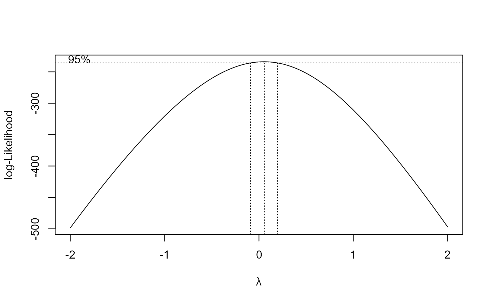
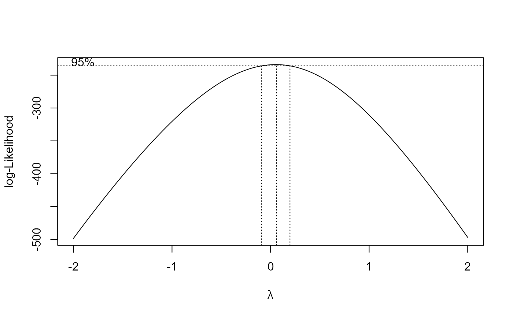
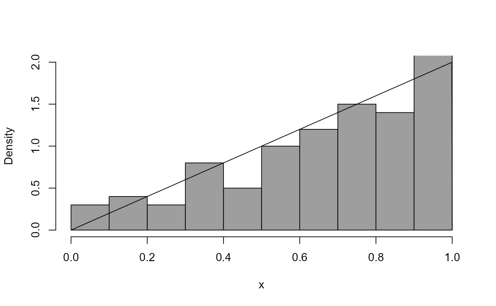
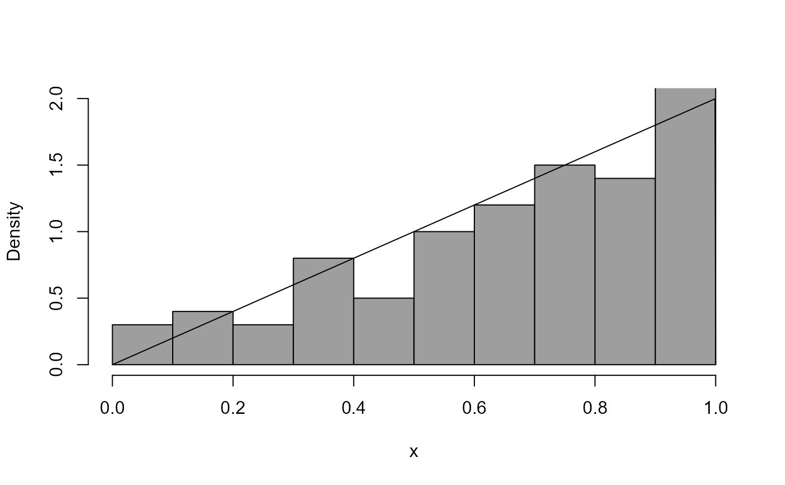
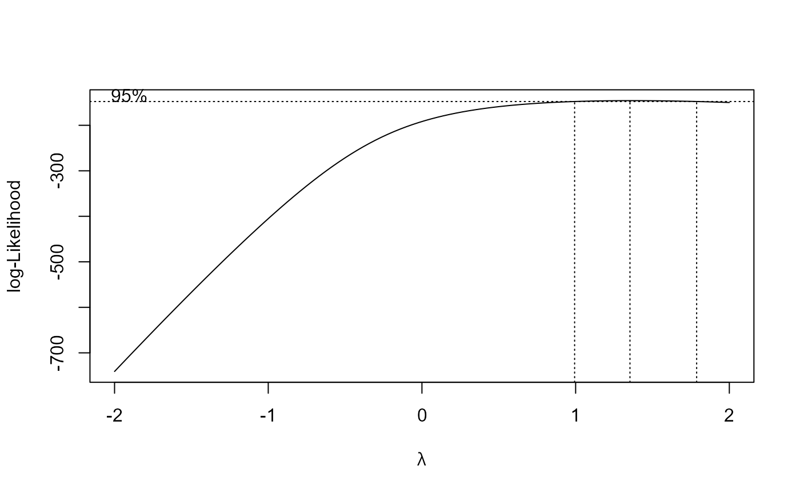
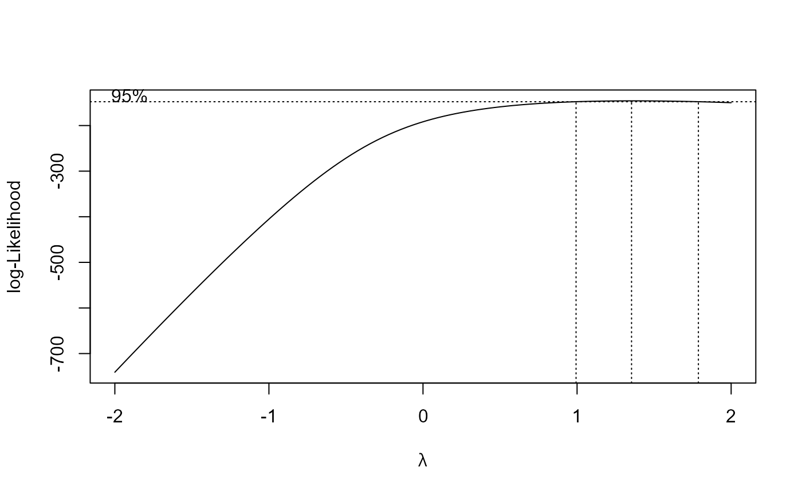

Box-Cox transforms the input data x and plots a histogram of the
transformed data. The Box-Cox transformation parameter is lambda.
If the probability density function (pdf) from which the data have arisen is
known and the function density_fn is supplied to calculate it then
this pdf is also Box-Cox transformed and the resulting transformed pdf
is superimposed on the histogram.
Arguments
- x
A numeric vector of data.
- lambda
A numeric scalar. Box-Cox transformation parameter \(\lambda\).
- density_fn
A function to calculate the pdf underlying the input data.
- breaks
The argument
breaksofhist. Provided to give control of the appearance of histograms.- main
The argument
mainofhist. Provided to enable a title to the added to the plot.- ...
Further arguments to
density_fn(if any).
Details
The equation $$y = (x ^ \lambda - 1) / \lambda.$$ is a Box-Cox transformation of a variable \(x\) to produce a transformed variable variable \(y\). The value of the parameter \(\lambda\) governs the behaviour of the transformation.
See the vignette Chapter 2: Graphs (More Than One Variable) for more details of what the code in Examples below is doing.
Examples
# Log-normal distribution --------------------
# X has a log-normal distribution if ln(X) has a normal distribution
# Simulate a sample of size 100 from a log-normal distribution
x <- rlnorm(100)
# Plot the data and the log-normal density function
boxcox_plot(x, density_fn = dlnorm, main = "data and true density function")
 # If we want to transform to approximate normality which power should we use?
boxcox_plot(x, density_fn = dlnorm, lambda = 0, main = "after transformation")
# If we want to transform to approximate normality which power should we use?
boxcox_plot(x, density_fn = dlnorm, lambda = 0, main = "after transformation")
 # We can use the data to suggest a good value of lambda.
# We need the boxcox() function in the MASS package.
library(MASS)
#>
#> Attaching package: 'MASS'
#> The following object is masked from 'package:stat0002':
#>
#> shuttle
# Very loosely speaking ...
# In this plot better values of lambda have the largest values.
# "Better" means "transformed data closer to looking like a sample
# from a normal distribution.
# We could choose a nice value of lambda close to the best value.
# The interval is a 95% confidence interval for lambda.
boxcox(x ~ 1)

# exponential distribution --------------------
x2 <- rexp(100)
boxcox_plot(x2 ,density_fn = dexp, main = "data and true density function")
# We can use the data to suggest a good value of lambda.
# We need the boxcox() function in the MASS package.
library(MASS)
#>
#> Attaching package: 'MASS'
#> The following object is masked from 'package:stat0002':
#>
#> shuttle
# Very loosely speaking ...
# In this plot better values of lambda have the largest values.
# "Better" means "transformed data closer to looking like a sample
# from a normal distribution.
# We could choose a nice value of lambda close to the best value.
# The interval is a 95% confidence interval for lambda.
boxcox(x ~ 1)

# exponential distribution --------------------
x2 <- rexp(100)
boxcox_plot(x2 ,density_fn = dexp, main = "data and true density function")
 boxcox_plot(x2, density_fn = dexp, lambda = 1 / 3, main = "after transformation")
boxcox_plot(x2, density_fn = dexp, lambda = 1 / 3, main = "after transformation")
 boxcox(x2 ~ 1)
abline(v = 1/3, col = "red")
boxcox(x2 ~ 1)
abline(v = 1/3, col = "red")
 # A distribution that I made up --------------------
dpn <- function(x) ifelse(x > 0 & x < 1, 2 * x, 0)
rpn <- function(n = 1) sqrt(runif(n))
x3 <- rpn(100)
boxcox_plot(x3, density_fn = dpn)

boxcox_plot(x3, density_fn = dpn, lambda = 2)
# A distribution that I made up --------------------
dpn <- function(x) ifelse(x > 0 & x < 1, 2 * x, 0)
rpn <- function(n = 1) sqrt(runif(n))
x3 <- rpn(100)
boxcox_plot(x3, density_fn = dpn)

boxcox_plot(x3, density_fn = dpn, lambda = 2)
 boxcox(x3 ~ 1)

boxcox(x3 ~ 1, lambda = seq(0, 4, 1 / 10))
boxcox(x3 ~ 1)

boxcox(x3 ~ 1, lambda = seq(0, 4, 1 / 10))
 boxcox_plot(x3, density_fn = dpn, lambda = 1.5)
boxcox_plot(x3, density_fn = dpn, lambda = 1.5)